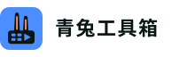

青兔工具箱 · logo 资产预览（P5.27 / 方向 A：兔耳 + 工具箱盒身 + 播放三角负空间）
本页直接以 <img> 引入同目录的 7 个 SVG 文件（不是内联复刻），所以这里看到的就是资产文件本身的渲染结果。 下方「真实像素放大」用 canvas 先把图标栅格化到它真实的 CSS 像素尺寸，再最近邻放大，用于判断 16px 下的辨识度。
#4C8DFF（public/media/app.css:9）#0A1613（描边 / 字标）#FF8A5B（内耳点缀）#111318（暗底）#E6E8EE（暗底字标）亮色底 · 尺寸阶梯
真实像素放大 · canvas 最近邻（左：16px 原尺寸栅格化；右：22 / 32px）
资产清单
主图标。站点标识、播放器 .p-brand、关于页、社交头图
64×64 · viewBox 0 0 64 64单色版（currentColor）。单色印刷、水印、favicon 兜底、压在任意底色的场景
64×64 · 无底色、无暖橙16px 极简版：只留兔耳 + 播放三角，去掉盒身与四格槽
16×16 · 浏览器标签页32px 极简版。高 DPI 标签页、PWA icon 的 32 档
32×32 · 同几何 ×2
横向组合：图标 + 字标「青兔工具箱」。站点顶栏、登录页、分享卡片
220×64 · <text> + 字体回退栈亮底版 lockup：字标用墨绿 #0A1613
220×64 · 白 / 浅灰底currentColor 默认为黑；暗底内联时继承父级 color，此处用 invert(1) 演示反白
64×64 · 见下方 dark 面板同一文件在 48 / 24 下保持几何一致，无描边变粗/糊边
矢量，任意尺寸暗色底（站内 --bg #111318）· 同一批资产
真实像素放大 · 暗底（canvas 先铺 #111318）
暗底上靠 #4C8DFF 底块自身发光，无需描边
对比度见下方备注currentColor：内联到组件时继承父级 color，暗底自动反白
单色可辨识暗底标签页：蓝底块 + 墨绿剪影，边缘清晰
32×32暗底 lockup：字标 --fg #E6E8EE，与播放页头部同色
220×64
暗底可辨性依据：底块 #4C8DFF 相对 #111318 的对比度约 6.4:1；墨绿剪影 #0A1613 相对底块约 5.9:1 —— 两层都过 3:1 的图形对比度底线。
替换 / 集成速查（本轮不落地，只给方案）
1. 播放页头部「青」字徽标：src/views/media/video/MediaPlayer.vue 里 .p-brand-badge（{{ brandInitial }}）换成
<img src="@/assets/brand/logo-mark.svg" width="22" height="22" alt="">，容器 .p-brand 已是 inline-flex + 22px 高，无需改布局。
2. favicon：把 favicon-32.svg（或再放一份 16 版）复制到 public/，在 index.html 里把
<link rel="icon" href="data:,"> 换成
<link rel="icon" type="image/svg+xml" href="/favicon.svg"> + <link rel="apple-touch-icon" href="/logo-mark.svg">。
3. 已知限制：logo-lockup/light/dark 的字标是 <text>，依赖本机中文字体；字体缺失时按回退栈替换，字形宽度仍在 22px 量级，viewBox 已留 40px 余量不会溢出。